El Comité organizador del Pueblo de Santa Cruz del Monte
agredece a todos los participantes en la
XXIX Carrera Atlética del Coyote
Que se llevó a cabo el
DOMINGO 3 DE MAYO DE 2026
En CUAUHTLAN (Donde abundan las águilas) SANTA CRUZ DEL MONTE

El Comité organizador del Pueblo de Santa Cruz del Monte
agredece a todos los participantes en la
Que se llevó a cabo el
En CUAUHTLAN (Donde abundan las águilas) SANTA CRUZ DEL MONTE
¡Rompimos marca en participación!
Más 700 corredores del Valle de México y naucalpenses participaron en la 29° Carrera Atlética del Coyote en Santa Cruz del Monte en Naucalpan, con una tradición de las más antiguas del Valle de México, triplicando la participación de años anteriores.
Vinieron grupos de corredores de todo el Estado de México
A parte de Santa Cruz del Monte, estuvieron deportistas de la Unidad Cuauhtémoc, que entrena Román Juárez, también del IMCUFIDEN y quien fue juez y parte fundamental para llevar a buen término el evento.
Además llegaron otros grupos de los municipios de Cuautitlán Izcalli, Tlalnepantla, de las colonias México 86, San Rafel Chamapa, Los Remedios, Lomas Verdes, Fuentes de Satélite, Ciudad Satélite; así como Los Aztecas Apango y empresa INGESA. Se reencontraron corredores que se conocen de años como los del equipo El Cerrito.
Una carrera de mucho entusiasmo entre adultos, jovenes y niños
Una gran fiesta deportiva llena de alegría, con premios por edad, en varonil y femenil, desde libres hasta veteranos plus, con niños y jovenes. Las familias hiciendo un gran ambiente con porras a sus hijos, nietos, esposo o esposa.
Los organizadores y las autoridades vecinales, agradecieron al director del Instituto Municipal de Cultura Física y Deporte de Naucalpan, Miguel Reyes Esequiel, gobierno de Naucalpan, por su apoyo, y a David Parra Sánchez quien siempre ha estado presente, al igual que su apoyo.
También estuvo, como invitado especial, uno de los orgullos naucalpenses, el medallista Olímpico, Carlos Mercenario, quien ha sido el único mexicano que ganó medalla en el año 1992, en los Juegos Olímpicos de Barcelona. Cabe destacar que Carlos Mercenario festejó su cumpleaños el 3 de Mayo.
Los que llegaron primero a la meta de la carrera de 5 kilómetros fueron:
- Primer lugar: Ariel Martínez.
- Segundo lugar: Omar.
- Tercer lugar: Raúl Pérez.
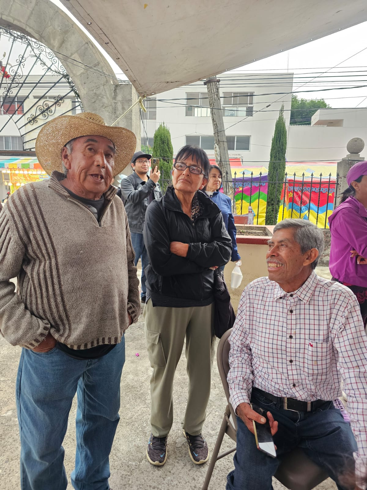
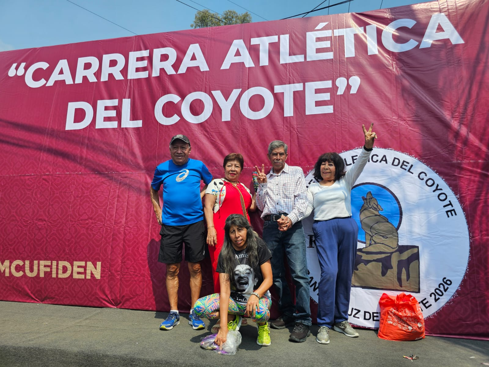
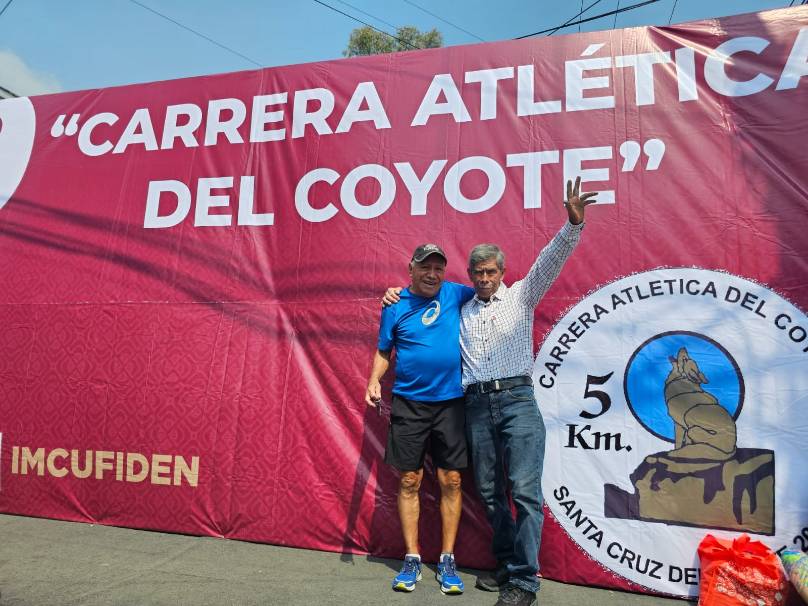
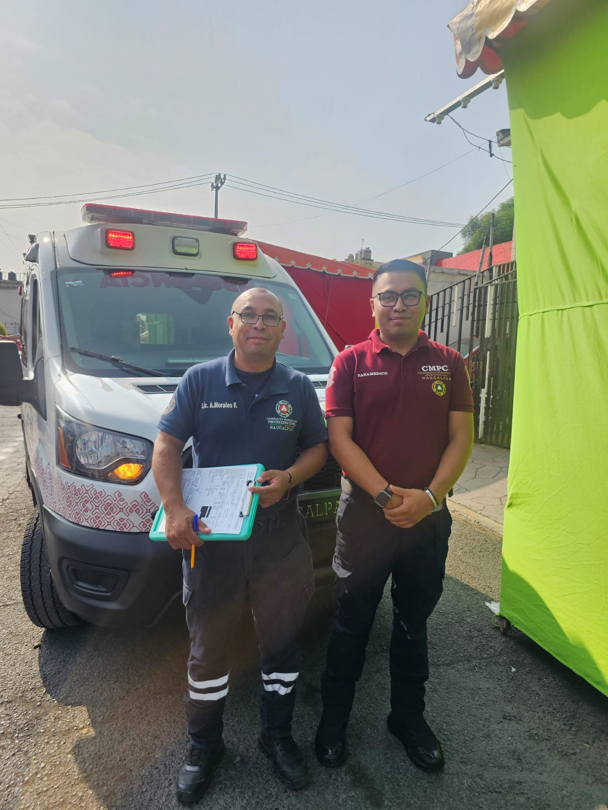
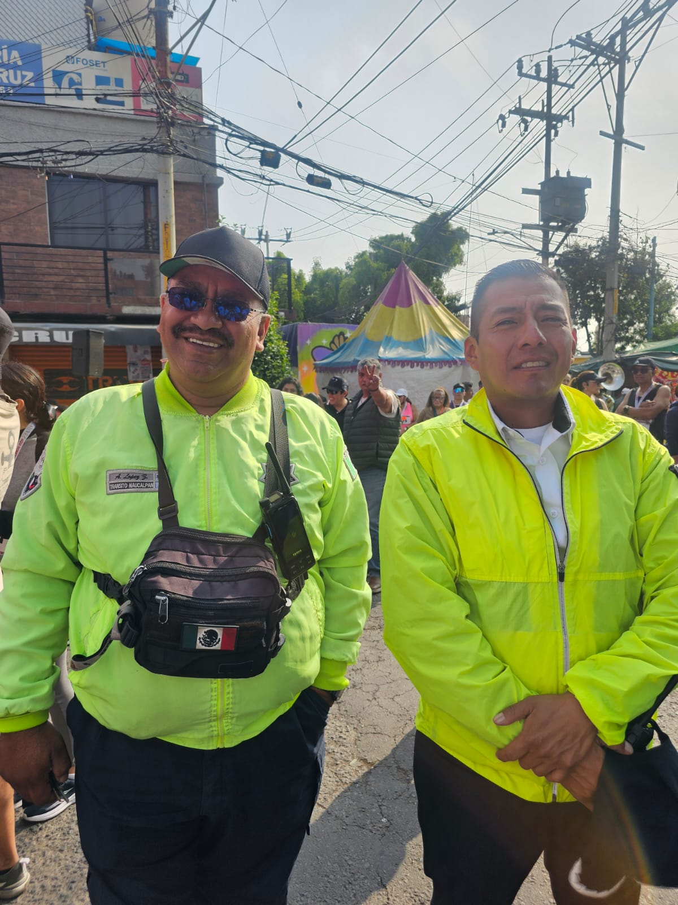
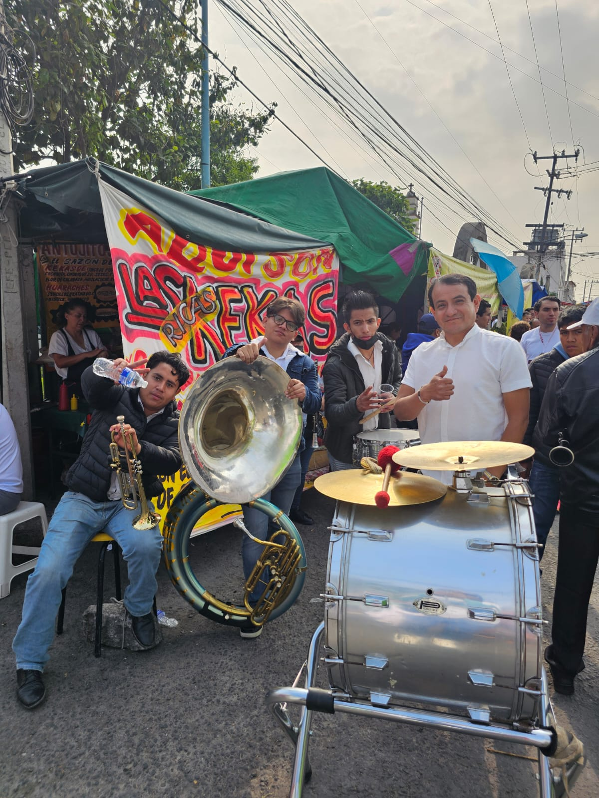
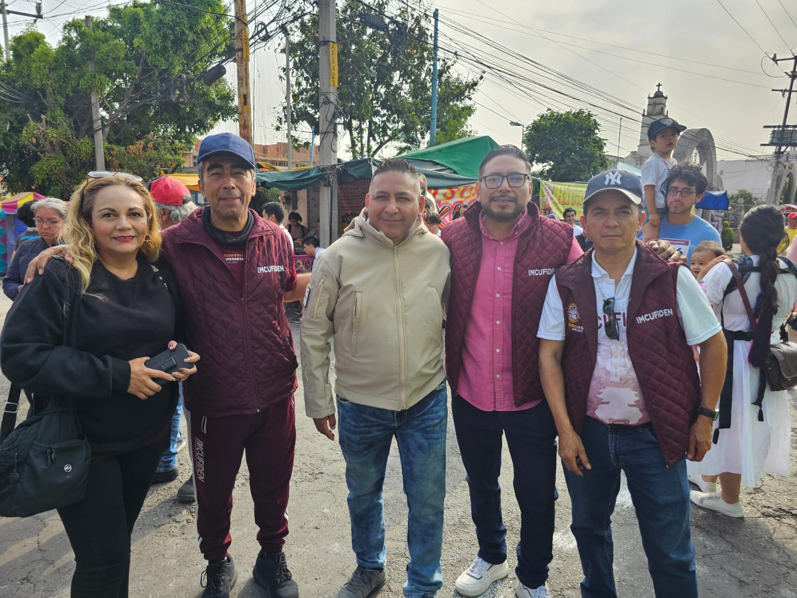
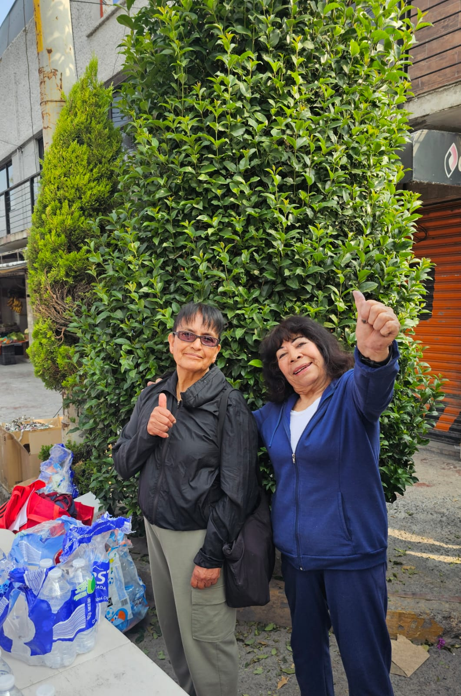
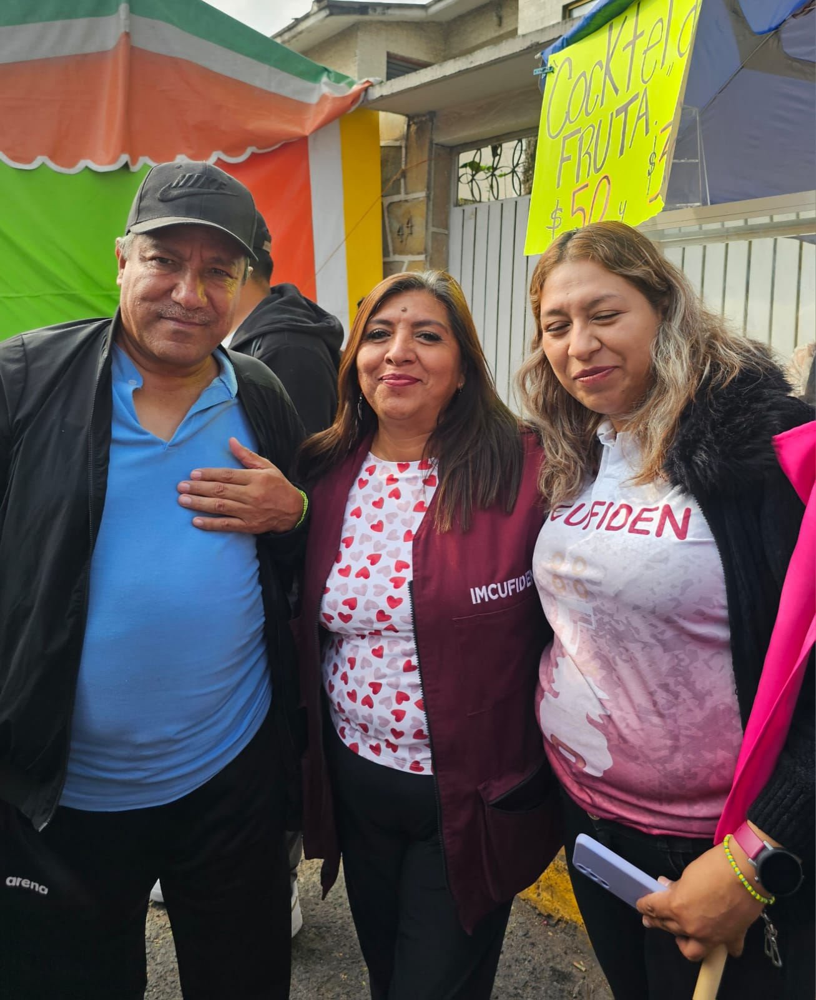
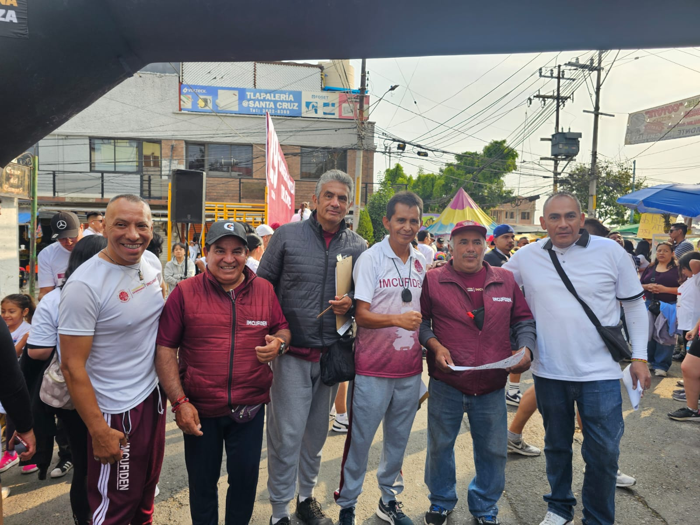
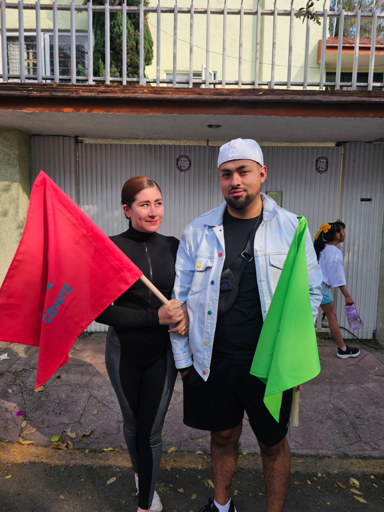
| # | Nombre | Categoría |
|---|